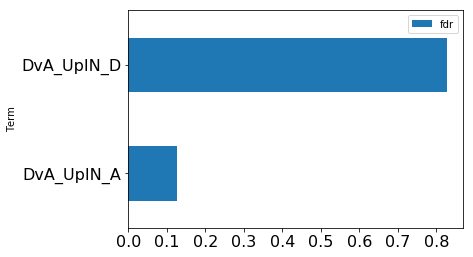
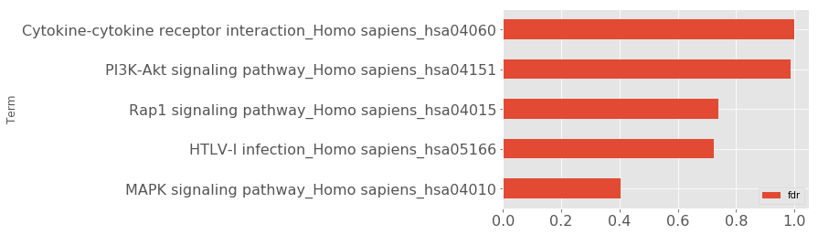
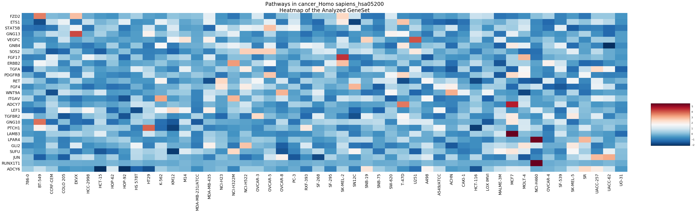

GSEAPY Example¶
Examples to walk through GSEApy¶
1. Load essential packages¶
In [1]:
%matplotlib inline
import pandas as pd
import gseapy as gp
import matplotlib.pyplot as plt
Check gseapy version
In [2]:
gp.__version__
Out[2]:
'0.8.7'
See all gseapy supported enrichr library names
Enrichr library could be used for gsea, ssgsea, and prerank,
too
In [3]:
names = gp.get_library_name()
names[:10]
Out[3]:
['ARCHS4_Cell-lines',
'ARCHS4_IDG_Coexp',
'ARCHS4_Kinases_Coexp',
'ARCHS4_TFs_Coexp',
'ARCHS4_Tissues',
'Achilles_fitness_decrease',
'Achilles_fitness_increase',
'Aging_Perturbations_from_GEO_down',
'Aging_Perturbations_from_GEO_up',
'Allen_Brain_Atlas_down']
2. Enrichr Example¶
1) Assign enrichr with pd.Series, pd.DataFrame, or list object¶
In [4]:
gene_list = pd.read_table("./gene_list.txt",header=None)
gene_list.head()
Out[4]:
| 0 | |
|---|---|
| 0 | CTLA2B |
| 1 | SCARA3 |
| 2 | LOC100044683 |
| 3 | CMBL |
| 4 | CLIC6 |
In [5]:
type(gene_list)
Out[5]:
pandas.core.frame.DataFrame
In [6]:
# convert dataframe or series to list
glist = gene_list.squeeze().tolist()
print(glist[:10])
['CTLA2B', 'SCARA3', 'LOC100044683', 'CMBL', 'CLIC6', 'IL13RA1', 'TACSTD2', 'DKKL1', 'CSF1', 'CITED1']
In [7]:
# run enrichr
# if you are only intrested in dataframe that enrichr returned, please set no_plot=True
# list, dataframe, series inputs are supported
enr = gp.enrichr(gene_list="./gene_list.txt",
# or gene_list='./gene_list.txt', or gene_list=glist
description='test_name',
gene_sets='KEGG_2016',
outdir='enrichr_kegg',
cutoff=0.5 # test dataset, use lower value of range(0,1)
)
In [8]:
enr.res2d.head()
Out[8]:
| Term | Overlap | P-value | Adjusted P-value | Old P-value | Old Adjusted P-value | Z-score | Combined Score | Genes | |
|---|---|---|---|---|---|---|---|---|---|
| 0 | Rap1 signaling pathway_Homo sapiens_hsa04015 | 19/211 | 0.000148 | 0.035223 | 0.000436 | 0.103734 | -1.961363 | 17.295956 | PDGFRB;CSF1;FLT4;VEGFC;ARAP3;LPAR4;ADCY7;ADCY6... |
| 1 | Pathways in cancer_Homo sapiens_hsa05200 | 27/397 | 0.000729 | 0.066282 | 0.001816 | 0.152127 | -2.083086 | 15.046848 | RET;LEF1;TGFA;LPAR4;ADCY7;ETS1;ADCY6;GLI2;FGF4... |
| 2 | Ras signaling pathway_Homo sapiens_hsa04014 | 18/227 | 0.000999 | 0.066282 | 0.002351 | 0.152127 | -1.956845 | 13.519663 | PDGFRB;CSF1;FLT4;VEGFC;ETS1;GNG13;FGF4;PLD2;EF... |
| 3 | Dilated cardiomyopathy_Homo sapiens_hsa05414 | 10/90 | 0.001114 | 0.066282 | 0.002557 | 0.152127 | -1.805957 | 12.280169 | DES;SGCB;TPM2;TNNC1;LMNA;TPM1;ITGAV;ADCY7;ADCY... |
| 4 | HTLV-I infection_Homo sapiens_hsa05166 | 19/258 | 0.001747 | 0.083151 | 0.003877 | 0.184562 | -1.843079 | 11.703417 | PDGFRB;STAT5B;EGR1;JUN;CD40;FZD2;CRTC3;NFATC1;... |
2) Command line usage¶
You may also want to use enrichr in command line
the option -v will print out the progress of your job
In [9]:
!gseapy enrichr -i ./gene_list.txt \
--description BP2017 \
-g GO_Biological_Process_2017 \
-v -o enrichr_BP
2017-11-24 13:04:41,536 Connecting to Enrichr Server to get latest library names
2017-11-24 13:04:42,380 Analysis name: BP2017, Enrichr Library: GO_Biological_Process_2017
2017-11-24 13:04:44,967 Submitted gene list:{'shortId': '350ch', 'userListId': 6127543}
2017-11-24 13:04:51,766 Downloading file of enrichment results: Job Id:{'shortId': '350ch', 'userListId': 6127543}
2017-11-24 13:04:55,500 Warning: No enrich terms using library GO_Biological_Process_2017 when cuttoff = 0.05
2017-11-24 13:04:55,500 Done.
3. Prerank example¶
1) Assign prerank() with a pd.DataFrame, pd.Series , or a txt file¶
Do not include header !
GSEApy will skip any comment lines startswith “#”.
Only contains two columns, or one cloumn with gene_name indexed when
assign a
DataFrame to prerank
In [10]:
rank = pd.read_table("./edb/gsea_data.gsea_data.rnk", header=None)
rank.head()
Out[10]:
| 0 | 1 | |
|---|---|---|
| 0 | CTLA2B | 2.502482 |
| 1 | SCARA3 | 2.095578 |
| 2 | LOC100044683 | 1.116398 |
| 3 | CMBL | 0.877640 |
| 4 | CLIC6 | 0.822181 |
In [11]:
# run prerank
# enrichr libraries are supported by prerank module. Just provide the name
pre=[]
for s, n in zip(['./genes.gmt', 'KEGG_2016'],['bp','kegg']):
#use 4 process to acceralate the permutation speed
pre_res = gp.prerank(rnk=rank,
gene_sets=s,
processes=4,
permutation_num=100, # reduce number to speed up test
outdir='prerank_report_'+n,format='png')
pre.append(pre_res)
In [12]:
#access results through res2d attribute
pre[0].res2d.head()
Out[12]:
| es | nes | pval | fdr | gene_set_size | matched_size | genes | |
|---|---|---|---|---|---|---|---|
| Term | |||||||
| DvA_UpIN_A | 0.405880 | 1.668479 | 0.042857 | 0.091603 | 284 | 19 | ABHD14B,VNN1,NELF,MARVELD2,LAMB3,TMPRSS2,TM6SF... |
| DvA_UpIN_D | 0.166924 | 0.681628 | 0.819672 | 0.809160 | 236 | 21 | PMP22,STBD1,DUSP14,RET,GPX8,CHRNB1,PRKD1,COL7A... |
In [13]:
pre_res = pre[0]
prerank_results = pre_res.res2d
prerank_results = prerank_results.reset_index()
prerank_results.head(5).plot.barh(y='fdr',x='Term',fontsize=16)
Out[13]:
<matplotlib.axes._subplots.AxesSubplot at 0x174c972ca20>

2) Command line usage¶
You may also want to use prerank in command line
In [14]:
# ! gseapy prerank -r temp.rnk -g temp.gmt -o prerank_report_temp
4. GSEA Example¶
1) Assign gsea() with a pandas DataFrame, .gct format file, or a text file¶
and cls with a list object or just .cls format file
In [15]:
phenoA, phenoB, class_vector = gp.parser.gsea_cls_parser("./P53.cls")
In [16]:
#class_vector used to indicate group attributes for each sample
print(class_vector)
['MUT', 'MUT', 'MUT', 'MUT', 'MUT', 'MUT', 'MUT', 'MUT', 'MUT', 'MUT', 'MUT', 'MUT', 'MUT', 'MUT', 'MUT', 'MUT', 'MUT', 'MUT', 'MUT', 'MUT', 'MUT', 'MUT', 'MUT', 'MUT', 'MUT', 'MUT', 'MUT', 'MUT', 'MUT', 'MUT', 'MUT', 'MUT', 'MUT', 'WT', 'WT', 'WT', 'WT', 'WT', 'WT', 'WT', 'WT', 'WT', 'WT', 'WT', 'WT', 'WT', 'WT', 'WT', 'WT', 'WT']
In [17]:
gene_exp = pd.read_table("./P53_resampling_data.txt")
gene_exp.head()
Out[17]:
| NAME | 786-0 | BT-549 | CCRF-CEM | COLO 205 | EKVX | HCC-2998 | HCT-15 | HOP-62 | HOP-92 | ... | MCF7 | MOLT-4 | NCI-H460 | OVCAR-4 | SF-539 | SK-MEL-5 | SR | UACC-257 | UACC-62 | UO-31 | |
|---|---|---|---|---|---|---|---|---|---|---|---|---|---|---|---|---|---|---|---|---|---|
| 0 | CTLA2B | 111.19 | 86.22 | 121.85 | 75.19 | 208.62 | 130.59 | 124.72 | 324.09 | 242.71 | ... | 163.76 | 59.50 | 134.12 | 152.09 | 197.46 | 137.79 | 81.53 | 123.37 | 81.41 | 180.78 |
| 1 | SCARA3 | 460.30 | 558.34 | 183.55 | 37.29 | 158.00 | 43.61 | 80.83 | 300.08 | 1250.25 | ... | 109.91 | 120.42 | 73.06 | 115.03 | 95.12 | 37.56 | 76.16 | 41.10 | 77.51 | 519.17 |
| 2 | LOC100044683 | 97.25 | 118.94 | 81.17 | 119.51 | 119.88 | 107.73 | 165.57 | 203.97 | 135.43 | ... | 222.84 | 124.98 | 114.75 | 141.66 | 170.19 | 147.70 | 157.48 | 152.18 | 98.89 | 118.06 |
| 3 | CMBL | 33.45 | 55.10 | 221.67 | 50.30 | 35.12 | 75.70 | 84.01 | 44.12 | 79.96 | ... | 51.32 | 117.11 | 59.46 | 78.46 | 45.55 | 49.07 | 96.69 | 33.09 | 10.38 | 52.89 |
| 4 | CLIC6 | 35.75 | 41.26 | 63.04 | 219.86 | 42.53 | 54.19 | 86.98 | 71.20 | 53.89 | ... | 154.05 | 31.62 | 37.66 | 32.64 | 63.35 | 27.95 | 70.99 | 36.25 | 17.50 | 49.41 |
5 rows × 51 columns
In [18]:
print("positively correlated: ", phenoA)
positively correlated: MUT
In [19]:
print("negtively correlated: ", phenoB)
negtively correlated: WT
In [20]:
# run gsea
# enrichr libraries are supported by gsea module. Just provide the name
gs_res = gp.gsea(data=gene_exp, # or data='./P53_resampling_data.txt'
gene_sets='KEGG_2016', # enrichr library names
cls=class_vector, # or cls= './P53.cls'
#set permutation_type to phenotype if samples >=15
permutation_type='phenotype',
permutation_num=100, # reduce number to speed up test
outdir='gsea_reprot',
method='signal_to_noise',
format='png')
In [21]:
#access the dataframe results throught res2d attribute
gs_res.res2d.head()
Out[21]:
| es | nes | pval | fdr | gene_set_size | matched_size | genes | |
|---|---|---|---|---|---|---|---|
| Term | |||||||
| DvA_UpIN_A | -0.524014 | -1.712877 | 0.022727 | 0.011111 | 284 | 19 | NELF,TMPRSS2,TSPAN33,JAK2,MAP3K5,VNN1,SELENBP1... |
| DvA_UpIN_D | 0.188121 | 0.621777 | 0.944444 | 0.936364 | 236 | 21 | GPX8,GAP43,SPEG,GNB4,PMP22,PROCR,RET,KLHL5,DUS... |
In [22]:
gsea_results= gs_res.res2d
with plt.style.context('ggplot'):
gsea_results = gsea_results.reset_index()
gsea_results.head(5).plot.barh(y='fdr',x='Term',fontsize=16)

2) Show the gsea plots¶
The gsea module will generate heatmap for genes in each gene sets in the backgroud.
In [37]:
from IPython.display import Image
#erich plot
Image("./gsea_reprot/DvA_UpIN_A.gsea.png",width=650, height=600)
Out[37]:

In [38]:
#corresponding heatmap
Image("./gsea_reprot/DvA_UpIN_A.heatmap.png")
Out[38]:

3) Command line usage¶
You may also want to use gsea in command line
In [25]:
# !gseapy gsea -d ./P53_resampling_data.txt -g KEGG_2016 -c ./P53.cls -o gsea_reprot_2 -v -t phenotype
5. Single Sample GSEA example¶
Note: When you run ssGSEA, all genes names in your gene_sets file should be found in your expression table
1) Assign ssgsea() with a txt file, dataframe, or Seires(gene name as index).¶
In [26]:
# txt file input
ss = gp.ssgsea(data="./testSet_rand1200.gct",
gene_sets="./randomSets.gmt",
outdir='ssgsea_report',
sample_norm_method='rank', # choose 'custom' for your own rank list
permutation_num=100, # reduce number to speed up test
processes=4, format='png')
In [27]:
# or assign a dataframe, or Series to ssgsea()
ssdf = pd.read_table("./temp.txt",header=None)
ssdf.head()
Out[27]:
| 0 | 1 | |
|---|---|---|
| 0 | ATXN1 | 16.456753 |
| 1 | UBQLN4 | 13.989493 |
| 2 | CALM1 | 13.745533 |
| 3 | DLG4 | 12.796588 |
| 4 | MRE11A | 12.787631 |
In [28]:
# dataframe with one column is also supported by ssGSEA or Prerank
# But you have to set gene_names as index
ssdf2 = ssdf.set_index(0)
ssdf2.head()
Out[28]:
| 1 | |
|---|---|
| 0 | |
| ATXN1 | 16.456753 |
| UBQLN4 | 13.989493 |
| CALM1 | 13.745533 |
| DLG4 | 12.796588 |
| MRE11A | 12.787631 |
In [29]:
type(ssdf2)
Out[29]:
pandas.core.frame.DataFrame
In [30]:
ssSeries = ssdf2.squeeze()
type(ssSeries)
Out[30]:
pandas.core.series.Series
In [31]:
#Series Example
# supports dataframe and series
for dat in [ssdf, ssdf2, ssSeries]:
ss = gp.ssgsea(data=ssdf,
gene_sets="./temp.gmt",
outdir='ssgsea_report_series',
permutation_num=100, # reduce number to speed up test
processes=4, format='png')
In [32]:
ss.res2d.head(5)
Out[32]:
| es | nes | pval | fdr | gene_set_size | matched_size | genes | |
|---|---|---|---|---|---|---|---|
| Term | |||||||
| hsa05205 | 0.341007 | 19.560692 | 0.0 | 0.0 | 203 | 201 | CTNNB1,PRKACA,GRB2,EGFR,RAC1,PRKCA,KRAS,CD44,M... |
| hsa05412 | 0.290588 | 10.006264 | 0.0 | 0.0 | 74 | 74 | CTNNB1,ACTB,ITGB1,CACNG3,RYR2,CTNNA1,CACNA2D3,... |
| hsa05410 | 0.270626 | 9.529653 | 0.0 | 0.0 | 83 | 83 | ACTB,ITGB1,TPM3,CACNG3,RYR2,CACNA2D3,ITGAV,ITG... |
| hsa05323 | 0.166596 | 5.875864 | 0.0 | 0.0 | 89 | 89 | JUN,ITGB2,ATP6V1B2,ATP6V1E1,IL1A,TGFB1,TEK,ATP... |
| hsa05322 | 0.176818 | 7.420074 | 0.0 | 0.0 | 134 | 134 | GRIN2B,H2AFX,ACTN1,HIST4H4,SNRPD1,C3,GRIN2A,SS... |
2) ssgsea supports gene expression matix in gct format.¶
if gene expression matrix is provided, ssgsea works like pandas
apply(),
which means it will compute NES,FDR … for every sample pairwise.
finally, you can assces the reuslts through resultsOnSamples
attribute.
Take previous gene_exp dataframe for example
In [33]:
df = pd.read_table("./P53_resampling_data.txt")
df.head()
Out[33]:
| NAME | 786-0 | BT-549 | CCRF-CEM | COLO 205 | EKVX | HCC-2998 | HCT-15 | HOP-62 | HOP-92 | ... | MCF7 | MOLT-4 | NCI-H460 | OVCAR-4 | SF-539 | SK-MEL-5 | SR | UACC-257 | UACC-62 | UO-31 | |
|---|---|---|---|---|---|---|---|---|---|---|---|---|---|---|---|---|---|---|---|---|---|
| 0 | CTLA2B | 111.19 | 86.22 | 121.85 | 75.19 | 208.62 | 130.59 | 124.72 | 324.09 | 242.71 | ... | 163.76 | 59.50 | 134.12 | 152.09 | 197.46 | 137.79 | 81.53 | 123.37 | 81.41 | 180.78 |
| 1 | SCARA3 | 460.30 | 558.34 | 183.55 | 37.29 | 158.00 | 43.61 | 80.83 | 300.08 | 1250.25 | ... | 109.91 | 120.42 | 73.06 | 115.03 | 95.12 | 37.56 | 76.16 | 41.10 | 77.51 | 519.17 |
| 2 | LOC100044683 | 97.25 | 118.94 | 81.17 | 119.51 | 119.88 | 107.73 | 165.57 | 203.97 | 135.43 | ... | 222.84 | 124.98 | 114.75 | 141.66 | 170.19 | 147.70 | 157.48 | 152.18 | 98.89 | 118.06 |
| 3 | CMBL | 33.45 | 55.10 | 221.67 | 50.30 | 35.12 | 75.70 | 84.01 | 44.12 | 79.96 | ... | 51.32 | 117.11 | 59.46 | 78.46 | 45.55 | 49.07 | 96.69 | 33.09 | 10.38 | 52.89 |
| 4 | CLIC6 | 35.75 | 41.26 | 63.04 | 219.86 | 42.53 | 54.19 | 86.98 | 71.20 | 53.89 | ... | 154.05 | 31.62 | 37.66 | 32.64 | 63.35 | 27.95 | 70.99 | 36.25 | 17.50 | 49.41 |
5 rows × 51 columns
In [34]:
# dataframe support for multisamples
ss = gp.ssgsea(data=df,
gene_sets="edb/gene_sets.gmt",
outdir='ssgsea_df_test',
permutation_num=100, # reduce number to speed up test
processes=4, format='png')
Results for all samples save to a dict,
you can assces the reuslts through resultsOnSamples attribute.
In [35]:
# convert dict to dataframe
ss2 = pd.DataFrame(ss.resultsOnSamples)
ss2.head()
Out[35]:
| 786-0 | A498 | A549/ATCC | ACHN | BT-549 | CAKI-1 | CCRF-CEM | COLO 205 | EKVX | HCC-2998 | ... | SN12C | SNB-19 | SNB-75 | SR | SW-620 | T-47D | U251 | UACC-257 | UACC-62 | UO-31 | |
|---|---|---|---|---|---|---|---|---|---|---|---|---|---|---|---|---|---|---|---|---|---|
| CDX2 OE-SPECIFIC | 0.029866 | 0.009337 | 0.009991 | -0.006401 | 0.021200 | 0.004605 | 0.040562 | -0.000645 | -0.038442 | 0.034446 | ... | 0.004149 | 0.070998 | 0.013445 | 0.024796 | 0.040438 | 0.020149 | 0.046420 | 0.068213 | 0.074007 | 0.004254 |
| ES-SPECIFIC | -0.034765 | -0.064445 | -0.093547 | -0.079831 | -0.087688 | -0.029811 | -0.134692 | -0.072833 | -0.094930 | -0.041915 | ... | -0.105478 | -0.070089 | -0.052564 | -0.147355 | -0.084841 | -0.109212 | -0.068695 | -0.063946 | -0.109282 | -0.031117 |
| GATA3 OE-SPECIFIC | 0.006017 | 0.020498 | -0.002182 | -0.031979 | 0.019852 | -0.013829 | -0.000989 | 0.031977 | 0.016550 | 0.040318 | ... | 0.006542 | 0.007366 | -0.011697 | 0.000496 | 0.017734 | 0.018743 | -0.013939 | 0.004336 | 0.010753 | -0.029823 |
| HDAC1 UNIQUE TARGETS | -0.031270 | -0.003659 | -0.012545 | -0.042056 | -0.025924 | -0.037497 | 0.010344 | -0.030242 | -0.023006 | -0.030458 | ... | -0.054006 | -0.042326 | -0.039184 | -0.000971 | -0.052314 | -0.022150 | -0.013882 | 0.028718 | -0.010532 | -0.036023 |
| OCT4 KD-SPECIFIC | -0.032486 | -0.041851 | -0.032199 | -0.041748 | -0.007263 | -0.033633 | 0.009335 | -0.008391 | -0.027491 | -0.006586 | ... | -0.039470 | -0.016508 | -0.035164 | 0.025732 | -0.008062 | -0.011654 | -0.022169 | -0.009253 | -0.010288 | -0.047723 |
5 rows × 50 columns
3) command line usage of single sample gsea¶
In [36]:
# !gseapy ssgsea -d ./testSet_rand1200.gct -g temp.gmt -o ssgsea_report2 -p 4